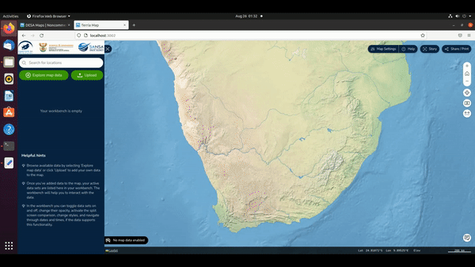
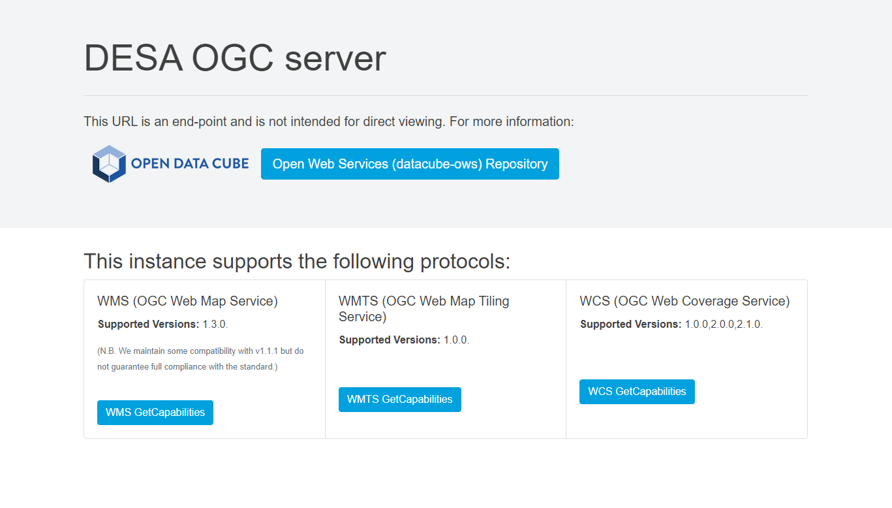
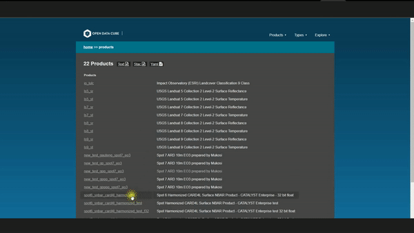

Explore DESA’s core platforms for Earth Observation data discovery, analysis, services, and data access.
DESA provides a suite of platforms and services that support data discovery, analysis, metadata access, and integration into Earth Observation workflows.

A web-based geospatial data catalogue explorer with medium to high resolution datasets. DESA Mapping platform features include services such as data upload, change detection, data comparison, time series, and story creation.
Explore DESA Maps
Students, the public, researchers, and data scientists can get their own workspace on a shared resource. JupyterHub runs on SANSA servers and provides users with access to computational environments and resources.
Sign Up / Log In
Provides users access to DESA data via standard web services using their own applications. Web Map Service (WMS) is currently offered. OWS can be used to add DESA imagery layers to commonly used GIS applications such as QGIS and ArcGIS.
Explore DESA OWS
A catalogue explorer interface that can be used by advanced users to reference and work directly with DESA data. Users can explore all DESA data layers on a map interface along with metadata and access routes.
Explore DESA ExplorerDESA platforms are designed to support different user needs across discovery, analysis, integration, and resource access.
Browse metadata, identify datasets, and understand coverage and availability.
Use notebook-based environments and structured data resources for research and analytics.
Connect DESA data into third-party GIS tools and downstream systems via standard services.